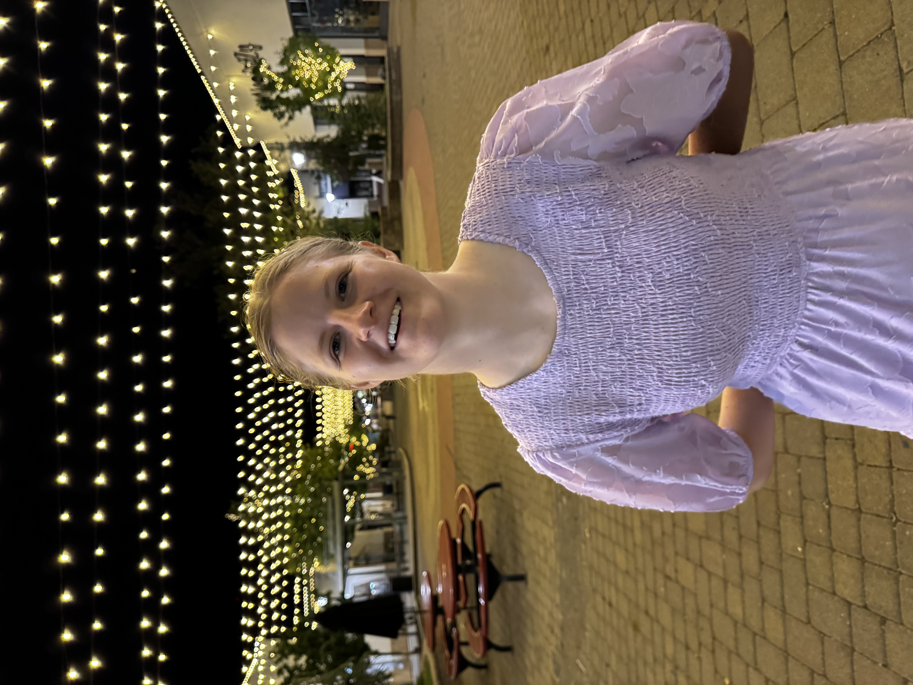
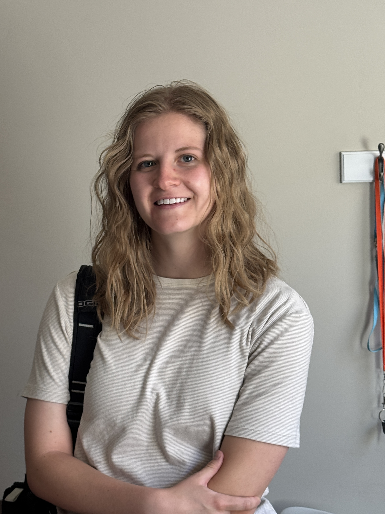
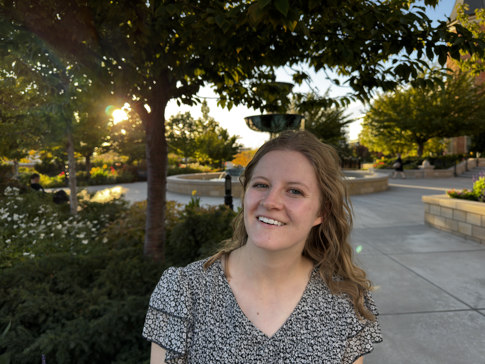
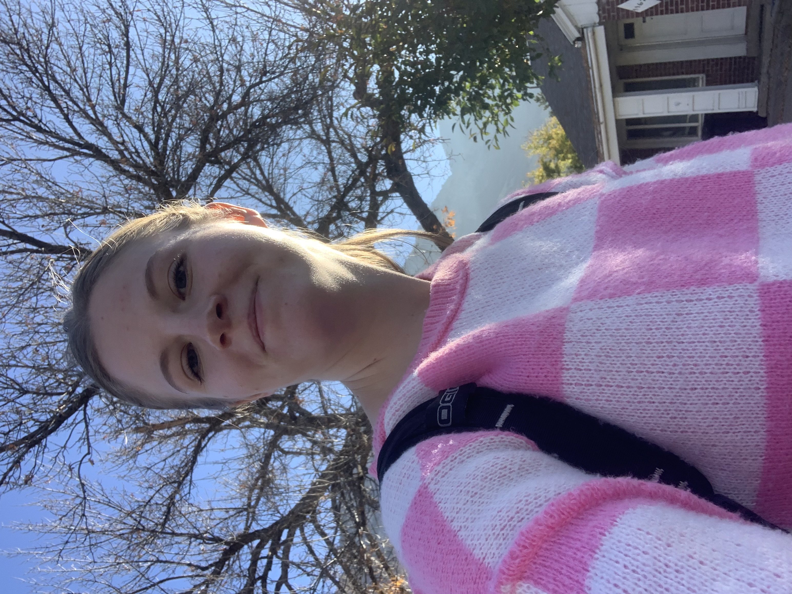
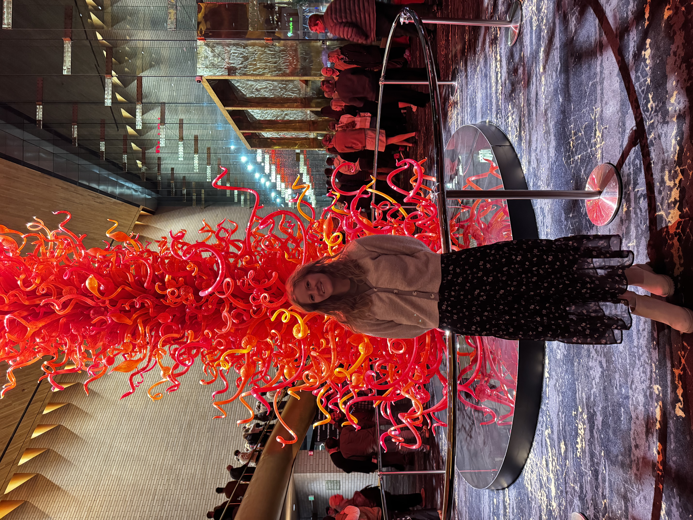

Meet Callie Madson
Composer, arranger, and orchestrator shaping immersive underwater worlds for stage and screen.
Callie crafts luminous soundscapes for choirs, instrumental ensembles, and filmmakers who want music that feels fluid and alive. Her scores balance vivid harmonic color with practical engraving so directors and conductors can bring performances to life quickly.
From the first voice memo to the final mix, she collaborates closely with artists—building custom stems, adapting voicings on the fly, and making sure every musician feels confident diving in.
What you'll hear
- • Lush treble and mixed-voice harmonies with gentle shimmer.
- • Hybrid orchestrations that blend strings, winds, and synth textures.
- • Flexible stems for live staging, broadcast, and post production.
How collaboration works
- • Weekly check-ins with annotated drafts and rehearsal notes.
- • Score prep tailored to the exact instrumentation on your roster.
- • Access to a trusted network of vocalists, session players, and engineers.





